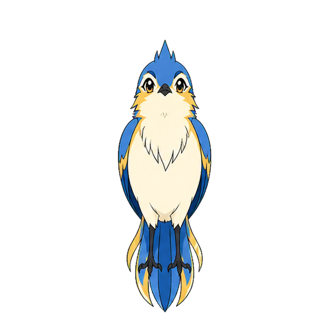

Character study · eight views
See every side.
The bird turns around a fixed center, revealing the complete head, wings, back, feet, and flowing tail design.
Front

Character study · eight views
The bird turns around a fixed center, revealing the complete head, wings, back, feet, and flowing tail design.
